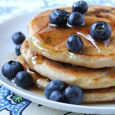

Blueeberry Pancakes

Description
An American classic to satisfy the soul
Ingredients:
- Pancake batter
- Blueberries
- Syrup
- Butter
Steps:
- Start making the pancake batter. If you don't know how to do this... google it.
- Make sure the batter is nice and smooth
- Heat up a pan on low to medium heat
- Add butter to the pan
- Pour batter onto the pan
- Add the blueberries to the liquid batter on the pan
- Cook for about 20 seconds and then flip
- Repeat for number of pancakes you want
- Place on a plate and add syrup and butter on top
- Enjoy!